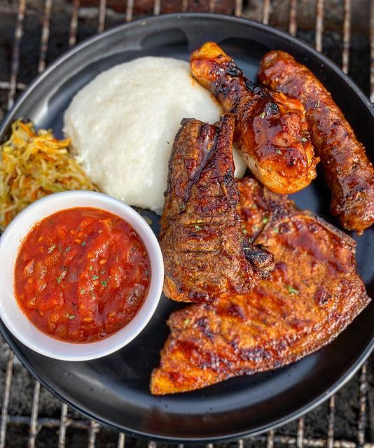
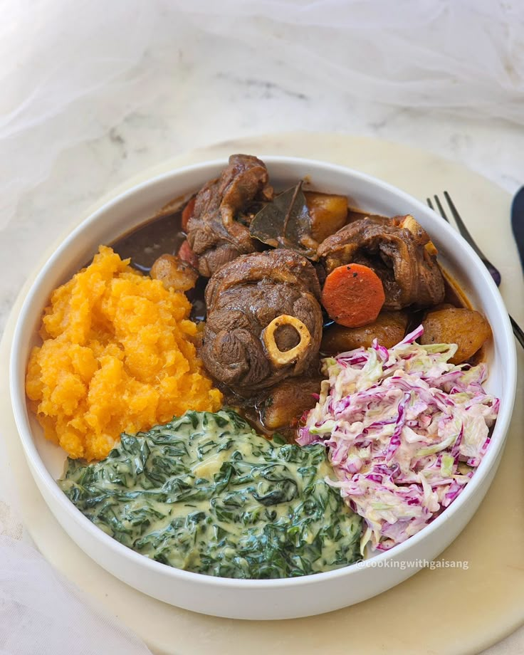
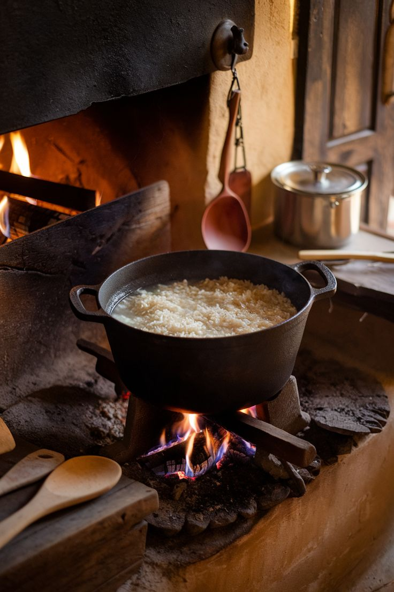

Keeping the culture alive
Keep the culture alive by exploring authentic dishes, uncovering their history, and mastering recipes from around the world. Whether you’re learning a family phrase, discovering fun facts, or scanning a meal to recreate it with local substitutes, our app makes every bite a journey. Share the flavors, savor the heritage, and connect with others through the universal language of food. Because every dish has a tale—let’s preserve it, one recipe at a time.
Popular dishes
-

Pap & wors
-

A Symphony of Spices & Tradition
-

South African Rainbow Cuisine

Discover the rich history and flavors in every bite
Every dish tells a story—a delicious journey through time, culture, and tradition. Each bite carries centuries of heritage and passion. Explore the origins, techniques, and soul behind iconic dishes. Whether you're recreating grandma's recipe or discovering new flavors, taste the history, share the love, and connect with the world—one unforgettable meal at a time.
Join the FoodLens community
Join our vibrant community of food lovers, where every dish is a story waiting to be shared. Connect with fellow enthusiasts, exchange recipes, and celebrate the joy of cooking together. Whether you're a seasoned chef or a curious beginner, there's a place for you here. Let's explore, create, and savor the world of flavors together!